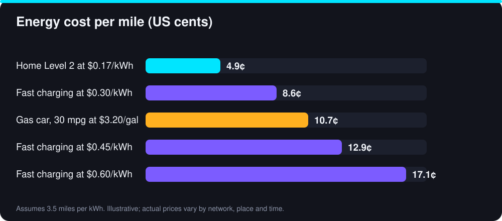

Public fast chargers are what make long EV trips possible. They are also where new owners are most often surprised, by the price, by how the speed changes during a session and by unwritten rules about sharing the stall. This guide walks through how to use a DC fast charger, what it costs, how to save time and how to be a good neighbor at the station.
Fast charging versus other public charging
Public chargers come in two broad types. Level 2 chargers, common at workplaces, shops and car parks, deliver roughly 6 to 11 kW and suit sessions of a few hours. DC fast chargers deliver anywhere from about 50 kW to 350 kW and can add hundreds of miles of range in under an hour for cars that accept high power. They bypass the car’s onboard charger and feed the battery directly.
Fast chargers use specific connectors. In North America, CCS and Tesla’s NACS are the main standards, and adapters are common during the transition. Our NACS vs CCS guide explains what to check for your car.
How to use a DC fast charger
- Plan ahead. Use your car’s navigation or a charging app to choose a station on your route. If the car offers battery preconditioning, start it on the way so the battery arrives warm and charges faster, especially in cold weather.
- Arrive with a low charge. Arriving at around 10% to 20% gives the fastest average speed. Leave a safety margin in case the charger is busy or faulty.
- Park so the cable reaches. Check where your charge port is and pick a stall that suits it. Do not stretch the cable.
- Start the session. Depending on the network, tap a card, scan a QR code, use the network’s app or rely on plug-and-charge, where the car identifies itself automatically.
- Plug in and confirm. Wait for the charger to handshake with the car. Check that the screen or your app shows power flowing.
- Monitor the session. Watch the kW and the estimated finish time. If it seems very slow, try another stall.
- Stop at about 80%, or when you have enough for the next leg. Unplug, return the cable neatly and move the car.
What it really costs
Fast charging is priced per kWh, per minute, or sometimes with a session fee on top. Rates vary by network, location and time of day, so treat any figure as an example. Using our standard assumptions, a car that uses 1 kWh per 3.5 miles, electricity at home of $0.17 per kWh and gasoline at $3.20 per gallon in a 30 mpg car:

- Home Level 2: $0.17 ÷ 3.5 ≈ 4.9 cents per mile.
- Gas car, 30 mpg: $3.20 ÷ 30 ≈ 10.7 cents per mile.
- Fast charging at $0.30 per kWh: about 8.6 cents per mile.
- Fast charging at $0.45 per kWh: about 12.9 cents per mile.
- Fast charging at $0.60 per kWh: about 17.1 cents per mile.
A worked example makes it concrete. Adding 50 kWh, enough for about 175 miles at 3.5 mi/kWh, costs $8.50 at home at $0.17 per kWh. At a fast charger charging $0.45 per kWh it costs $22.50. That is the same distance for $14 more. Fast charging is worth it when time or distance demands it, but it is not how to save money. Our cost of ownership guide shows how the mix of home and public charging changes your yearly costs.
Pricing models to watch for
- Per kWh. The clearest and fairest, since you pay for the energy you receive. Some states require it, and it is the easiest to compare.
- Per minute. Slower cars or slower stalls pay more per kWh, and your cost changes as the charging curve drops.
- Session or connection fee. A flat fee added to each session, which makes very short stops poor value.
- Idle fees. A per-minute charge that starts after your session ends or when you overstay. Move promptly.
- Memberships. A monthly fee for lower rates. Worth it only if you fast charge often.
Why charging slows down after 80%
Batteries can accept power quickly when they are low and much more slowly as they fill, to protect the cells. The car’s charging curve starts at a high power and tapers. Going from 10% to 80% may take about 30 minutes in many cars, while 80% to 100% can take as long again for a fraction of the range.
This is why short, frequent stops to about 80% are usually faster overall on a long drive than waiting for a full battery. For route planning, see our EV road trip guide.
Charging etiquette
- Move when you are done, or when you reach about 80% if others are waiting.
- Do not park in a charging spot unless you are charging. This includes gas cars, sometimes called ICEing.
- Leave cables tidy and hung up so the next driver can use them and they do not get run over.
- Do not unplug someone else’s car unless the network explicitly allows it and the session is clearly finished.
- Share power sensibly. On some stations two stalls share one power unit, so a stall alone gets higher speeds. If there is a choice, pick an unshared stall.
- Be patient and kind. If a queue forms, let people know roughly how long you need.
When a charger does not work
Even good networks have faulty stalls. Before you rely on a station, check recent user reports in the app for that exact stall, because they are often more current than the network’s own status. If a session will not start, try a different connector or stall, restart the session in the app, and re-seat the plug. Report broken chargers to the network so they are fixed, and always keep a backup station in mind and enough range to reach it.
Fast charging and the battery
Occasional fast charging on a road trip is what these systems are designed for. Regular fast charging as a daily habit can age a battery slightly faster than gentle home charging, particularly at high states of charge. Our battery degradation guide explains the trade-offs. The practical advice is simple: charge at home when you can and use fast chargers when you need them.
Ways to spend less on public charging
- Do most of your charging at home overnight, ideally on an off-peak rate.
- Use fast charging mostly for trips and emergencies.
- Compare prices in an app before you drive to a station.
- Skip memberships unless your usage clearly justifies the monthly fee.
- Watch idle fees and set an alert on your phone.
- Check whether your workplace, hotel or supermarket offers cheaper Level 2 charging while you are there anyway.
Bottom line
Public fast charging is convenient and fast, but it is a premium service. Learn your car’s charging curve, arrive low, leave at about 80%, understand the pricing before you plug in and keep the station moving for the next driver. If you find yourself relying on it every week, revisit your home charging setup. Our home charging guide explains how to set it up.
Sources and further reading
Figures marked as illustrative are worked examples built from the stated assumptions, not measured averages. Prices, incentives and specifications change, so confirm current details with these primary sources before you decide.
- Alternative Fuels Data Center: Electric vehicles (US DOE)
- FuelEconomy.gov: Electric vehicles (US DOE / EPA)
- Your car maker and charging network: current connector and adapter compatibility
Frequently Asked Questions
Many EVs go from 10% to 80% in roughly 20 to 45 minutes, depending on the car’s peak power, its charging curve, the charger and the temperature. The last 20% is much slower.
It can be. At $0.45 per kWh and 3.5 miles per kWh, energy costs about 12.9 cents per mile, more than a 30 mpg car at $3.20 per gallon (about 10.7 cents). Home charging is usually far cheaper.
You can, but it is not ideal. It costs more than home charging and can age the battery slightly faster if done at high states of charge. Use fast charging when you need it and charge at home otherwise.
Check that the plug is fully seated, restart the session in the app and try another stall. Check recent user reports for that station and report the problem to the network.
Bilal Ahmad Alvi
CEO, FutureAutoLab
Written and reviewed by Bilal Ahmad Alvi, CEO of FutureAutoLab, following our editorial policy. Spot an error? Tell us and we will correct it.